202mm · f/5.6 · 1/2000s · ISO400
Tanveer Naidu — two continents, one lens. Documenting the world through raw light and honest moments.
View photography →I find meaning in the details — the light in a photograph, the idea buried inside a page, the satisfaction of building something from nothing.
A photographer and visual storyteller. Whether through a camera lens or a blank canvas, I'm always in the act of creating.
My ambition is still forming — and I love that. A life shaped by creativity, curiosity, and a refusal to stop learning.
More work is on the way — I'm continuously shooting and uploading new collections. Stay tuned.
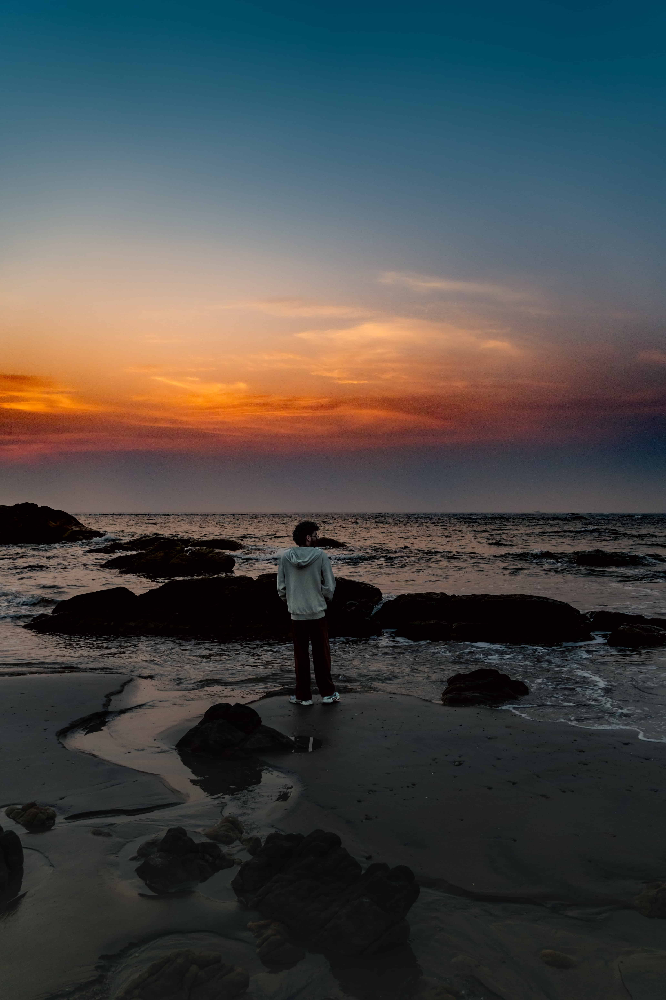

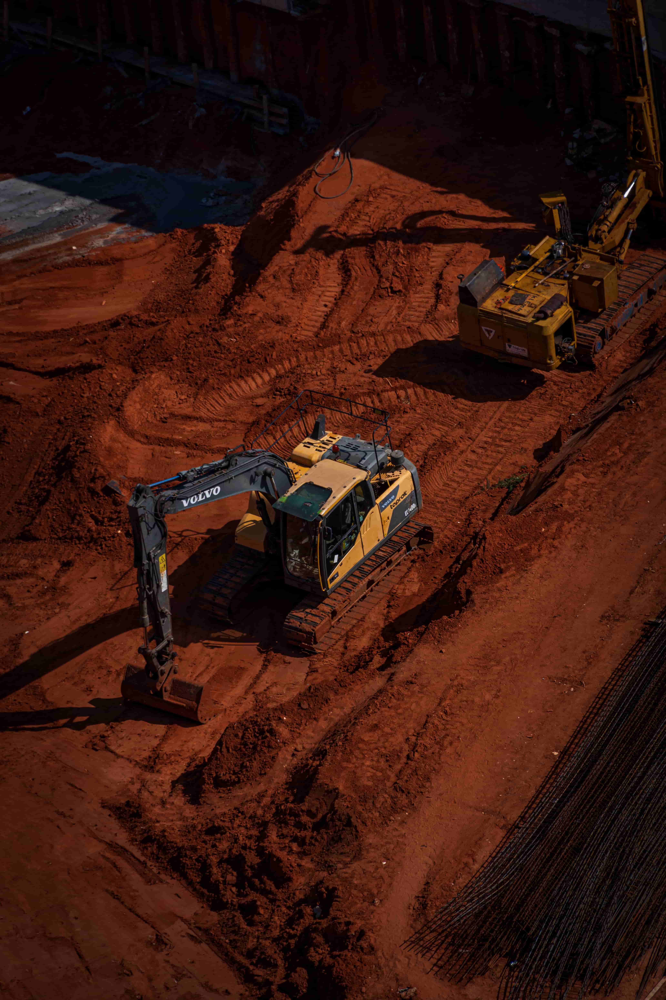

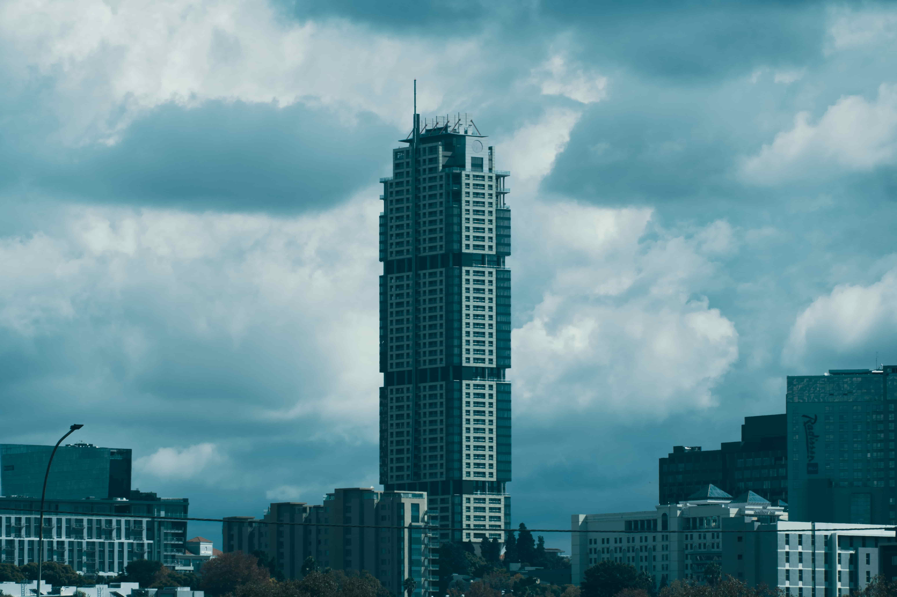


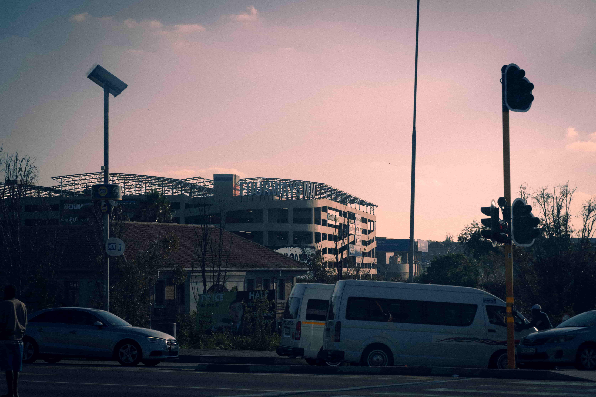

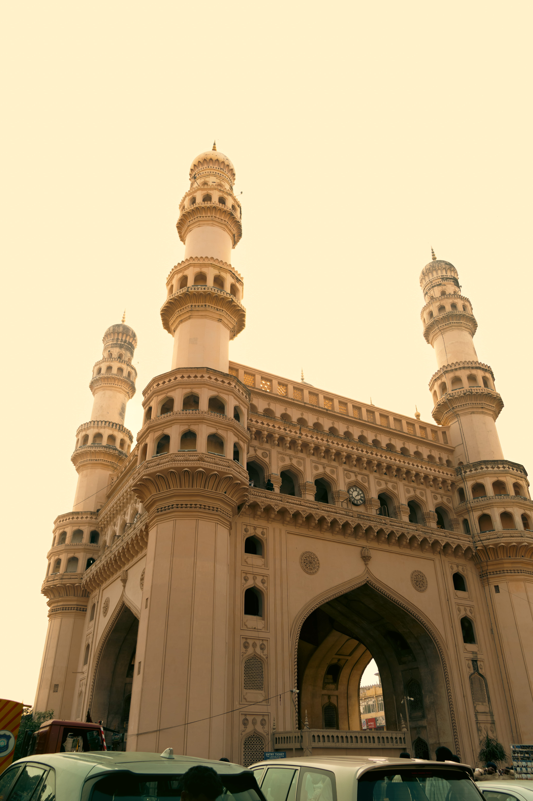


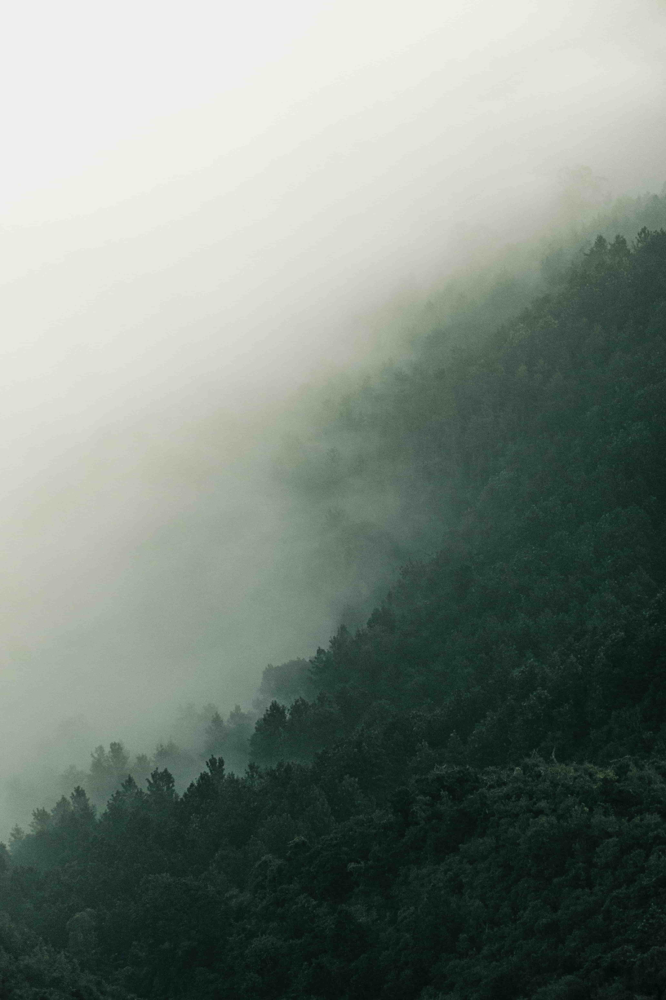
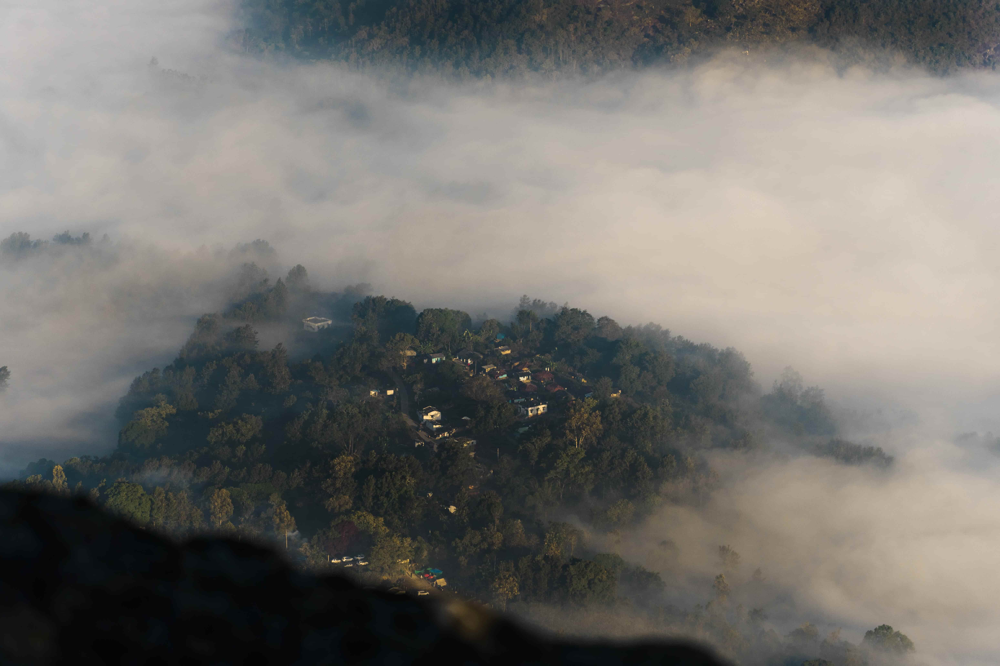

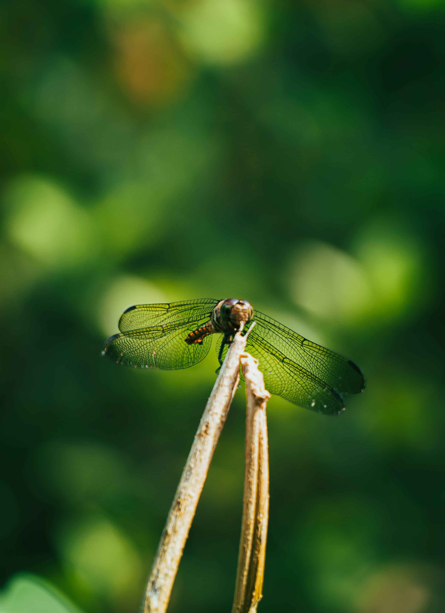

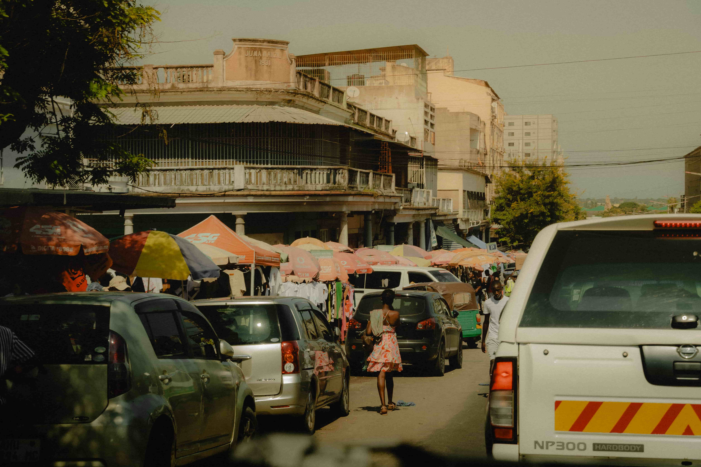
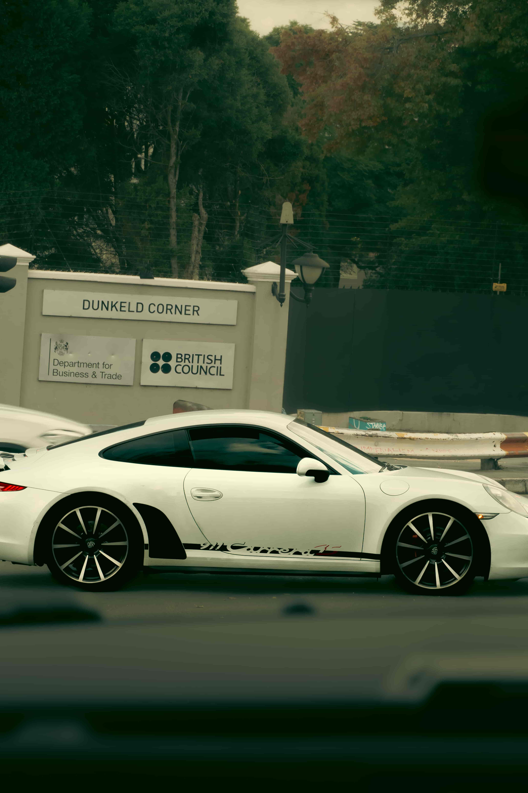

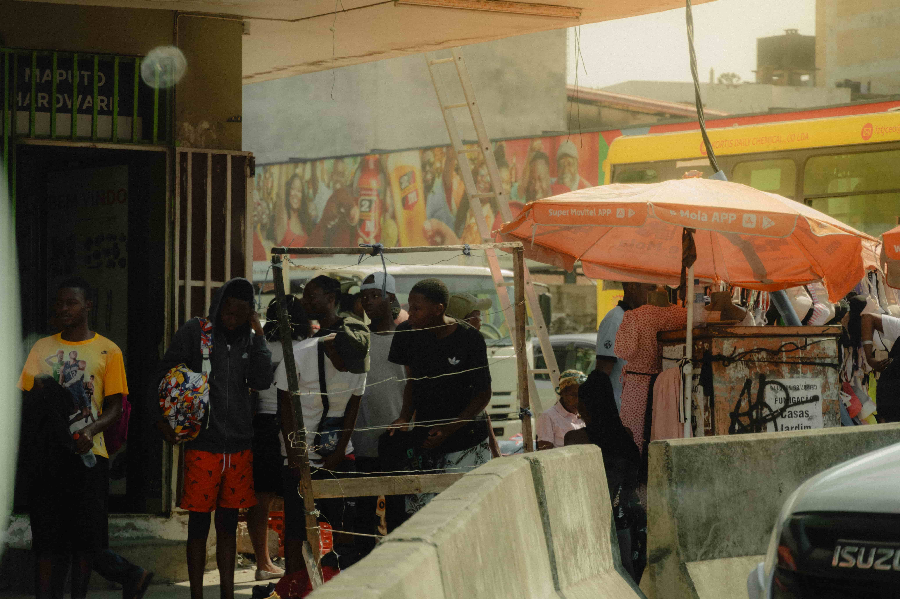
ONE LENS, INFINITE PERSPECTIVES.
— Equipment Sony A6700 Sony 18-135mm f/3.5-5.6 Sigma 30mm f/1.4 DJI RS4 Mini